Pymol Practice
1 Note about installing Pymol
There are two options to use Pymol in your computer:
- Edu license:
- STEP 1: Install from https://pymol.org/2/ or by Conda:
conda install -c schrodinger pymol-bundle - STEP 2: Obtain a License here: https://pymol.org/edu/
- Open Access version from GitHub:
On Linux: https://pymolwiki.org/index.php/Linux_Install
On MacOs: https://pymolwiki.org/index.php/MAC_Install
UPDATE: for new MacOS, instead MacPorts use the following command to install dependencies:
brew install tcl-tk- Open Access version from conda-forge channel
conda install -c conda-forge pymol-open-source2 A 10-steps self-guided practice to learn Pymol
The first thing to do is to open PyMOL. You can do that by simply double-clicking on the icon or typing pymol in a Terminal window. From here and on, we will just use PyMOL by typing in the command line on the small window on top where it says ‘PyMOL>’. Feel free to explore the graphical interface on your own.
The next thing we are going to do is navigate to the directory (folder) where we want our files to be located. By default, Pymol opens in your home directory. Inside PyMOL, we can use command lines to navigate to that directory. If you type ls, you will see the files and folders that exist in the home directory and if you type the cd command and providing a path you can chance your working directory.
2.1 1. Get a structure.
There are two ways to get a structure ready to work on Pymol, you can open a file in your local machine or you can fetch it from the PDB.
If you have already the PDB go to File Menu>Open PDB or GetPDB
You can also fetch the directly from the PDB database, either by Menu File > Get PDB or by Command line
fetch 6KI3Note: You can customize the download by specifying one chain or adding the electron density map in the popup window or by command line. Check the wiki: https://www.pymolwiki.org/index.php/Fetch
Note2: If you want to download structural models from AlphaFold you can install Alphafold2import plugin from here: https://github.com/APAJanssen/Alphafold2import
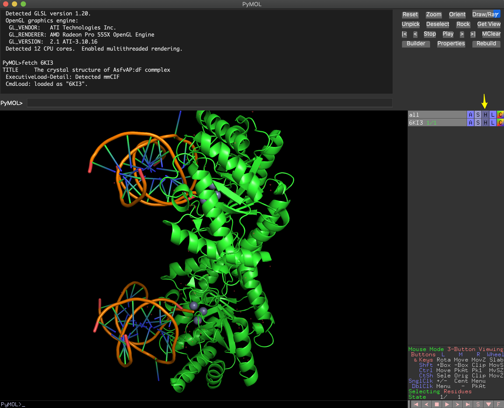
What do you see?
First thing you should do is playing around with your mouse. Most of you will have a 3-Button mouse. The panel in the right-bottom corner contains a description of mouse controls under the Viewing mode. You can also check it here.
If you have a 2-Button mouse, you can find more information about how to control the mouse here.
What are the small red dots and the big spheres?
Crystallography structures show protein oligomers and may also contain, enzyme substrates, cofactor or solvent molecules (water and ions). For most purposes, we may prefer to work only with a monomer and remove the water molecules.
There are two options to remove the water molecules:
Use the Hide menu on the right hand of the screen (marked with the yellow arrow in the picture above).
- H>waters
On command-line you can also hide custom solven:
hide everything, solvent
show wire, solvent #to bring it back
show nb_spheres, solvent #alternative display- Use the Show menu
- S>wire>not_bounded
As you can imagine, there are many different ways of visualizing the molecules and features you can show on the screen that you can explore on your own. In pymol we have lines, ribbon, surface, everything, mesh, volume, cartoon, spheres, labels and sticks.
Like in the example above, you can hide/show any representation for an object or selection using the following sintax:
hide \[representation\], \[selection-name\]
show \[representation\], \[selection-name\]The selection-nameis an optional argument and can be very complex or specific, involving one or more portions of one or more objects.
❗️You can see a detail explanation of the Pymol selection syntax in the Pymol wiki here.
⚠️ Before moving forward: What if I made a mess? ⚠️
Starting in version 1.5, PyMOL contains an undo command (also Ctrl+Z or Cmd+Z). However, it only affect object edition (changes in the structure), no changes in visualization or diplaying features. If you made a mess in the visualization of your molecule(s), you only have two alternatives.
Use File, Reinitialize to reset PyMOL to its initial state, but all work will be lost.
Save your session when you accomplish a wanted display:
A PyMOL sessions retains the state of your PyMOL instance. You can save the session to disk and reload it later. You can setup a complicated scene, with transitions and more, and simply save it as a PyMOL Session (.pse) file. Use File=>Save Session or Save Session As…. or the command
savehttps://pymolwiki.org/index.php/SaveLoading sessions is just as easy: File=>Load and choose your session file with all your molecules with the same visualization.
You can also save temporal scenes within your session, like frozen screenshoots while keep working, using the command
scene: https://pymolwiki.org/index.php/Scene
2.2 2. Choose representation and color schemes.
Different types of representation can be selected with S. There are also wide range of flavors for each representation. For example, for cartoons: https://pymolwiki.org/index.php/Cartoon
We can color the protein by secondary structure using Menu C
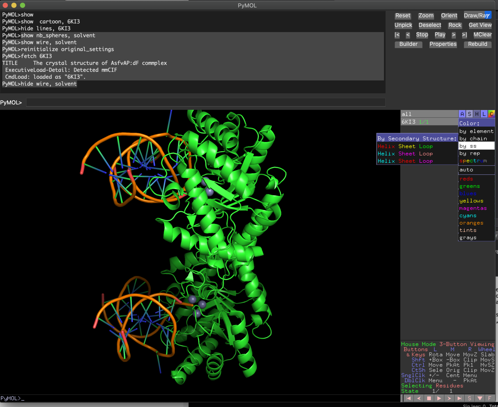
Spectrum color scheme is also useful to follow the secondary structure succession.
Using upper menu (Settings and Display) we can also change several features of the image. Try yourself!
It’s faster if you just type:
color tv_orange, ss h
color paleyellow, ss s
color grey, ss l+
set sphere_color, tv_red
bg_color whiteNote: l+ will color loops and other unassigned residues, including DNA
🔝🔝Check other coloring alternatives: https://pymolwiki.org/index.php/Advanced_Coloring
For DNA: https://pymolwiki.org/index.php/Examples_of_nucleic_acid_cartoons
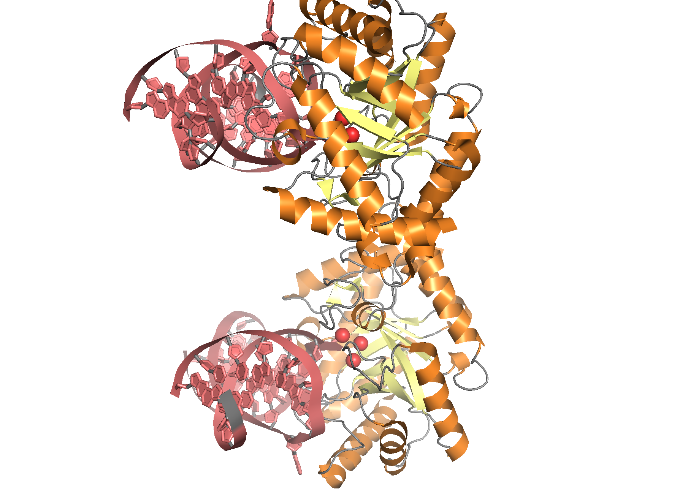
Example:
set cartoon_ring_mode, 3
set cartoon_nucleic_acid_mode, 4
cartoon oval
cartoon automatic, 6KI3 and chain A or chain B
set cartoon_ring_width, 0.2
set cartoon_ring_color, deepsalmon
set cartoon_nucleic_acid_color, deepsalmon2.3 3. Create new object and/or get rid of what you don’t want
If we want to work only with some objects or chains in the PDB file, you can do it in several ways. There are several options but you need to show the sequence (Menu Display or button S on the botton-right corner).
You can remove objects (Option 1A or 1B) or copy a selection to a new object (Option 2A or 2B). You can test all with the instructions below, but I find more convenient to use command line alternatives (1B and 2B).
Note: The options below are alternative ways to get the same results. Try only one option each time starting over from 6KI3 structure.
- Option 1A: select in the sequence panel the sequence you want to remove and remove it
remove seleOption 1B: use command line
- Step 1: First you need to see the composition of your structure
get_chains 6KI3 select chain A select chain B #to see who is who- Step 2: select the chains you want to remove and remove them
select kk, chain A or chain C or chain D or chain E
delete kkOption 2A: Select in the sequence panel the sequence or whole chains you want to keep: A > “Copy to object” or “extract to object” will allow to work independently with that portion without removing the rest. Just click on the object to disable.
Option 2B: use command line
- Step 1: Select and create:
select kk, chain B or chain F or chain G or chain H
create monomer, kkOr directly create an object with your selected chains:
create monomer, chain B or chain F or chain G or chain H
- Step 2: Now you can remove the original object (if you wish)
remove 6KI3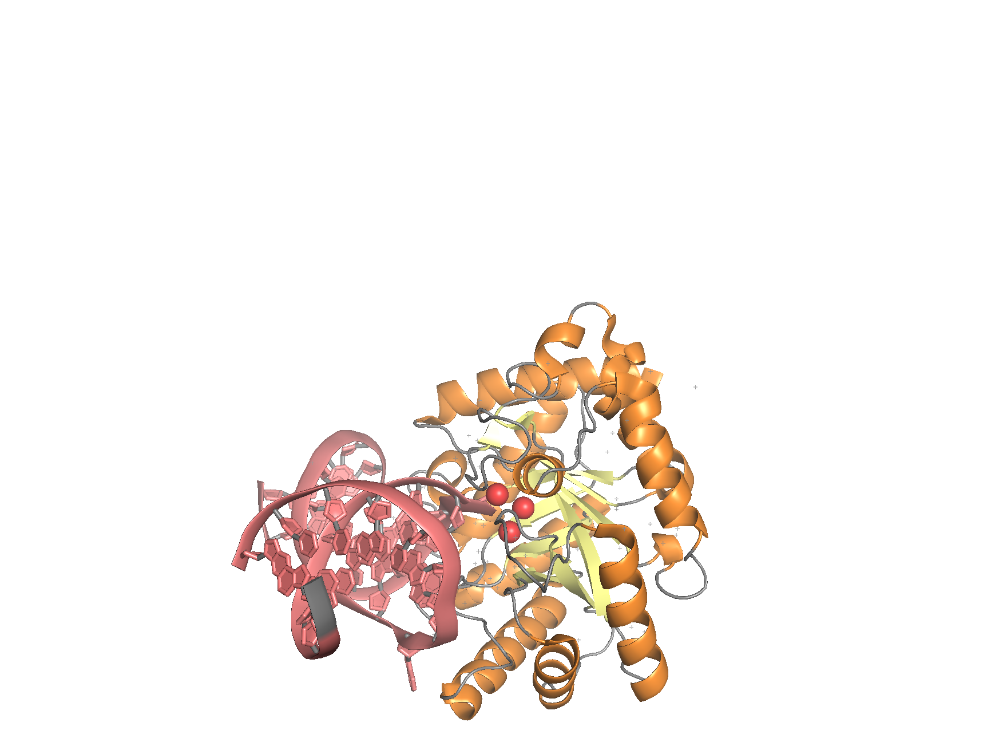
Some interesting points about selection on Pymol:
Unnamed selection are temporarily named “sele” and replaced after every
selectcommand execution.Selections can be renamed in the A (action menu on the left) or by command line : https://pymolwiki.org/index.php/Set_name
Multiple selection can be also done but syntax is tricky: https://pymolwiki.org/index.php/Selection_Algebra
Create your own representation of the monomer ternary complex (protein + metal cofactor + DNA)
2.4 4. Compare structures
Download some related structures, like 6KHY, 3AAM and 2NQH.
Note that 6KHY also contains several chains. For comparison we don’t need the DNA, so we will use only the protein chain A.
fetch 6KHY
create 6KHY_monomer, 6KHY and chain A #it also has several chains
delete 6KHY #remove the original structure for clarity
fetch 3AAM
fetch 2NQHNow you should have four structures: 6KI3 (or monomer), 6KHY_monomer, 3AAM, and 2NQH
Pymol has several alternatives for structural alignments. The three more common are the commands super, alignand cealign, depending on the level of similarity. super is very fast and competent when proteins sequences are very similar, whereas align is a very quick alternative and useful for most purposes with a clear sequence similarity. On the other hand, cealing is based in the CE algorithm and although somewhat slower it provides better structural alignment for proteins without clear similarity.
align 6KHY_monomer, 6KI3
align 3AAM, 6KI3
align 2NQH, 6KI3
zoom all #to center the view of all the proteins in the new position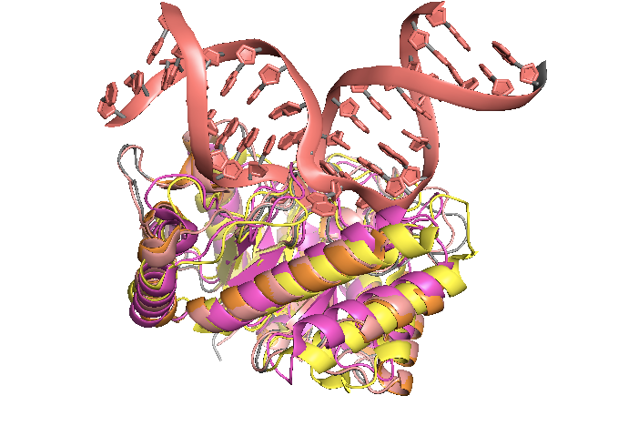
A.4. Can you range the three new structures by their similarity with 6KI3?
NOTE: From version 1.7.2, there is also a command to align multiple structures with a reference molecule, using extra_fit.
2.5 5. Find what you are looking for
Now we can play with different representations for specific residues, like catalytic ones: D231, H182, H115, E142, H218, H78, E271, H233.
You can select them directly picking from the sequence. If you want to keep this selection for the future you can name it in the A menu. Using show and color menu, you can also change how those residues are displayed.
Quick alternative (note the different use of and-or and the parenthesis https://pymolwiki.org/index.php/Selection_Algebra):
select catalytic_res, monomer and (resi 231 or resi 182 or resi 115 or resi 142 or resi 218 or resi 78 or resi 179 or resi 271 or resi 233)
show sticks, catalytic_res
zoom catalytic_res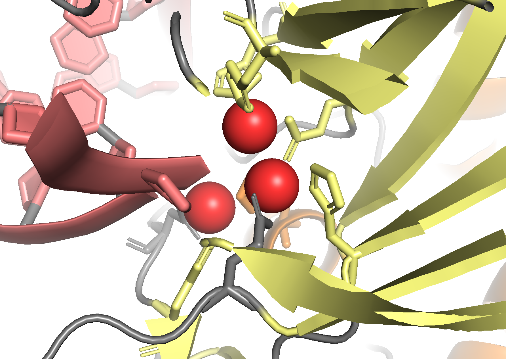
There are also some interesting tricks for disclosing ligand binding or catalytic sites:
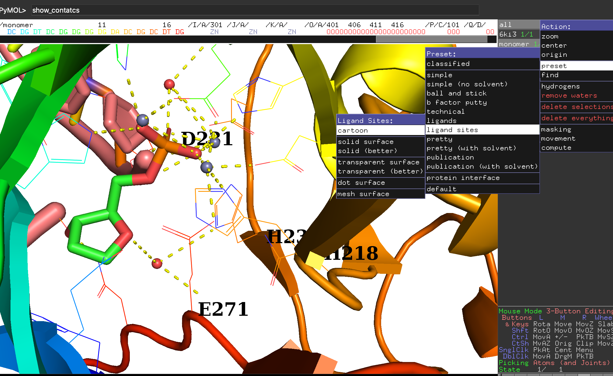
More info about selection of multiple objects in Pymol here: https://pymolwiki.org/index.php/Selection_Algebra
2.6 6. Highlight what you want
You can also hide the cartoon partly or totally and color by elements
hide cartoon, monomer and chain A
show sticks, chain D and resi 10
show sticks, catalytic_res
set_bond stick_radius, 0.25, catalytic_res
color red, chain D and resi 10 and elem o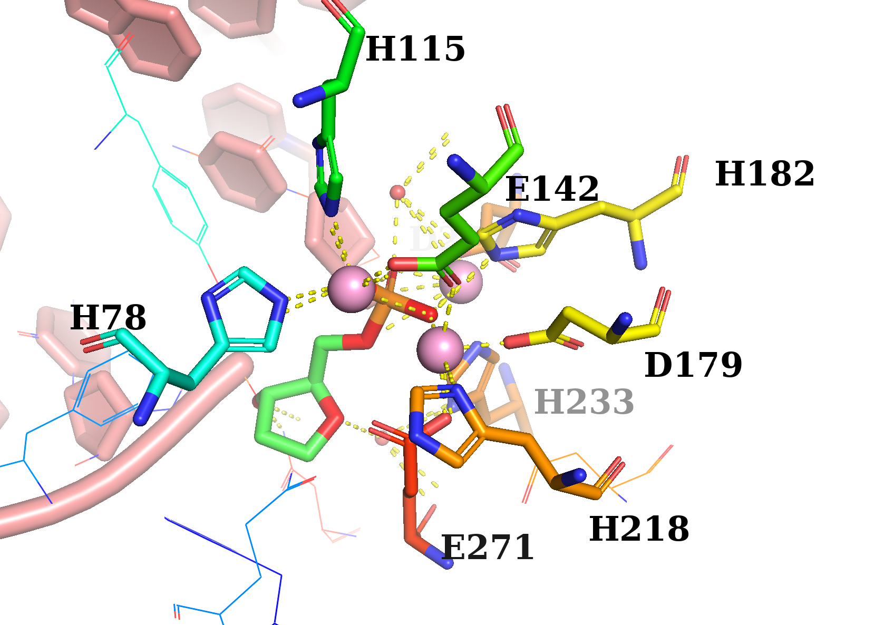
2.7 7. Show labels
Use the L menu to show the labels of your object/selection
You can also use the command
labelto show labels
label [selection], [expression]Labels can be formatted in different ways, for example:
set label_outline_color, black
set label_font_id, 10
set label_size, -2.5
set label_position,(0,0,100), resi 87You can also move the labels with “Edit mode”: http://polo.engr.colostate.edu/drillbits/lessons/59/#:~:text=To%20get%20labels%20exactly%20where,click%20to%20move%20the%20label.
Be careful not to pick on the molecule (UNDO still partial!)
Make a picture of the catalytic center with your custom representation, including labels
2.8 8. Measure distances
Menu Wizard>Measurements
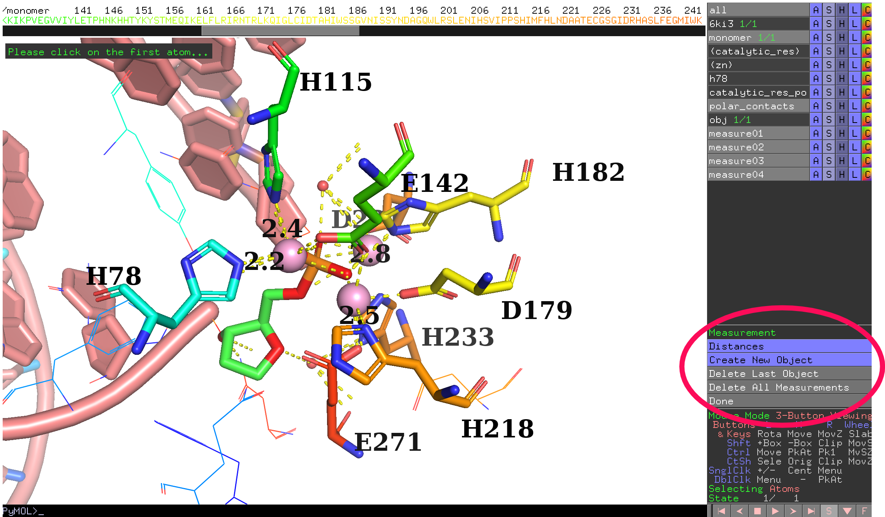
Click “Done” on the right when you are done.
2.9 9. How to make a high-res picture: RAY IT!
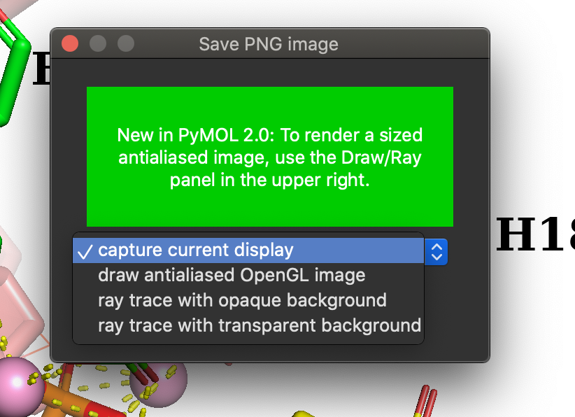
Also by command line:
set ray_opaque_background, on
set ray_trace_mode, 1
ray
png picture.pngor:
set ray_trace_mode, 1
png /modesto/strbio/picture.png, width=2000, height=1200, dpi=600, ray=1NOTE. If Ray takes too long, you can try ray=0 or draw: https://pymolwiki.org/index.php/Draw
See:
https://pymolwiki.org/index.php/Ray
https://pymolwiki.org/index.php/Png
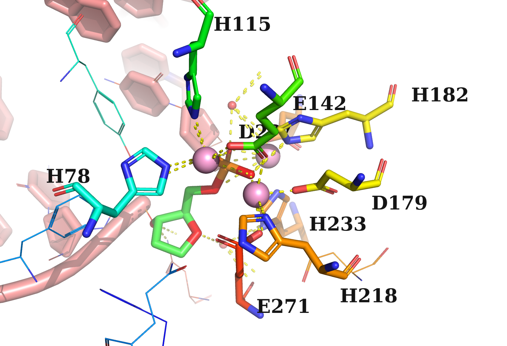
Note that objects in a deeper position look lighter. This is the “fog” effect
See: https://pymolwiki.org/index.php/Fog and https://pymolwiki.org/index.php/Depth_cue
NOTE. If Ray takes too long, you can try draw: https://pymolwiki.org/index.php/Draw
2.10 10. BONUS TRACK: More info and useful resources about Pymol.
More Pymol exercises:
Quick Reference Guide for Intermediate PyMOL Users: https://www.uml.edu/docs/PyMOL%20Quick%20Reference%20Guide_tcm18-230352.pdf
Short Pymol book: https://dasher.wustl.edu/chem430/software/pymol/introduction.pdf
Practical Pymol for Beginners: https://pymolwiki.org/index.php/Practical_Pymol_for_Beginners
PyMOL-based protein structure workbook
- Exploring Protein Structure: Principles and Practice: https://link.springer.com/book/10.1007/978-3-319-76858-8
Another interesting tutorial: http://www.protein.osaka-u.ac.jp/rcsfp/supracryst/suzuki/jpxtal/Katsutani/en/index.php
Pymol for Begginers YouTube series in “Swanson Does Science” channel: https://www.youtube.com/channel/UCz8iGpZDrxv8zu2eJp62uew
1: Orientation - https://www.youtube.com/watch?v=wiKyOF-pGw4
2: Labels - https://www.youtube.com/watch?v=nFY3EjBNPBQ
- A more advances video here: https://www.youtube.com/watch?v=yBFzJ3ql4qU
3: Measurements - https://www.youtube.com/watch?v=lB-0WsZt8M8
4: H-bonds - https://www.youtube.com/watch?v=xUdETtfhens
5: Alignments - https://www.youtube.com/watch?v=T0v1Dx6Yb-I
Alternative: FATCAT2 http://fatcat.godziklab.org/
6: Mutagenesis - https://www.youtube.com/watch?v=M-VCBz83nfs
Active sites with Pymol: https://www.youtube.com/watch?v=mBlMI82JRfI
Movies with Pymol: https://pymol.org/tutorials/moviemaking/#:~:text=Moviemaking%20concept,the%20key%20frames%2C%20if%20applicable.
2.11 PART B: Paper Figure Challenge
B. Make a ready-to-publish picture of your favorite protein.
As a suggestion, you can reproduce the top panels in the Figure 1B of Gao et al. (2020) or Figure 4b from Cilleros-Rodríguez et al. (2022), but any structure involving more than one domain and/or with a substrate/cofactor molecule can be a good challenge. You may use Pymol or any other application, including Py3Dmol in a Jupyter Notebook.